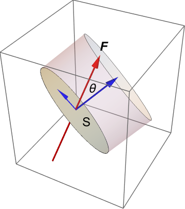

2. Mathematical ideas 2¶
Big ideas: what do the fluid particles do? In this section you will have to think about the relationship between the velocity field and the path of fluid particles. For instance, we can ask questions such as :
does the velocity field make the fluid particles rotate?
can a snapshot of the velocity field at a fixed time tell us about the paths taken by individual fluid particles?
does the shape of a streak of dye injected into the fluid tell us about the paths taken by individual fluid particles?
2.1. Vorticity¶
Vorticity is a measure of the local rotation or spin of fluid particles. It is defined as the curl of the velocity vector \((u,v,w)\):
An illustrated interpretation of vorticity is given below, looking only at the \(z\)-component for simplicity. Note that the subscript notation used on the diagram represents partial differentiation, not a vector component. We consider two fluid line elements \(AB\) and \(AC\), which are aligned with the \(x\) and \(y\) axes, respectively. By the definition of the partial derivative, we can write
so
\(\displaystyle \frac{\partial v}{\partial x}\) represents the instantaneous angular velocity of the fluid line element \(AB\)
\(\displaystyle\frac{\partial u}{\partial y}\) represents the instantaneous angular velocity of the fluid line element \(AC\)
The local anticlockwise spin about \(A\) is therefore given by \(\displaystyle \frac{\partial v}{\partial x}-\frac{\partial u}{\partial y}\).
vorticity illustration
It is important to recognise that the vorticity is not related to the global rotation of the fluid. To illustrate this, we will consider the vorticity of some basic flows, which are either rotating or not rotating.
Example 1: Shear flow
Consider a two-dimensional “shear” velocity profile described by \(\underline{v}=(u(y),0,0).\)
This flow is a rectilinear flow; meaning that it is not rotating as a whole, as can be seen from the image below. However, the vorticity is non-zero since fluid particles are rotated by the shearing force, as would be seen by an observer following the fluid.
velocity profile
We see that the fluid elements rotate about the \(z\) axis in a clockwise direction (due to the negative sign).
Example 2: Line vortex (‘potential vortex’)
Consider a flow described in cylindrical polars \((\rho,\theta,z)\), by the velocity profile \(\underline{v}=\left(0,\frac{k}{\rho},0\right)\), where \(k\) is a positive constant.
This flow is a swirling motion with velocity decreasing in the radial direction like \(\frac{1}{\rho}\), as illustrated in the figure below
line_vortex
The vorticity is zero, meaning that fluid particles are swept round the origin without local rotation. To show this, we have to use the result for the gradient in cylindrical polars:
The surprising result occurs in this example because the slowing down of the fluid away from the origin is just the right strength to create a rotational shear that counterbalances the angular rotation of the fluid.
Helmhotz decomposition (fundamental theorem of calculus) Any vector field that is smooth, defined everywhere in space and vanishes at infinity together with its first derivatives can be decomposed as follows:
We will not prove this result, but we will use it to simplify the equations of motion in some scenarios.
The first term is irrotational (curl-free) from the vector identity “curlgrad=\(\underline{0}\)” and the second term is solenoidal (divergence-free) from the vector identity “divcurl=0”.
2.2. The gradient¶
From the definition of the scalar product, we know that
where \(\theta\) is the angle between \(\nabla \phi\) and the direction vector \(\hat{\underline{v}}\).
The result is largest when \(\theta=0\) and in this case \(D_{\hat{\underline{v}}}=\nabla \phi\). Therefore, \(\nabla \phi\) points in the direction of maximum increase of the function \(\phi\) and has magnitude equal to the rate of maximum increase. The gradient is also perpendicular to the level sets of \(\phi\), since on a level set \(\mathrm{d}\phi=0\).
The gradient of \(\phi(x,y,z)\) will be perpendicular to the surface \(\phi=c\), and we can use this to find the tangent plane to the surface at a given point.
The gradient of \(z=z(x,y)\) will be perpendicular to the contours of \(z\), projected in the \((x,y)\) plane, as illustrated in the figure below.
A contour plot of the surface \(z=x^3-y^3-2xy+2\), together with the gradient field given by \(\nabla z = (3x^2-2y,-36^2-2x,0)\),
2.3. What is flux?¶
Consider a small (strictly infinitesimal) surface element \(S\) within a field \(\underline{F}\), such that the surface normal makes an angle \(\theta\) to the direction of the field, as shown. The components of the field in directions parallel and perpendicular to the surface are illustrated in blue. The perpendicular component has magnitude \(F\cos{\theta}\). The parallel component remains bounded by the surface.

Multiplying the normal component of the field by the area of the surface element gives the volume indicated by the shaded cylinder in the image below. It is a scalar quantity, which tells us the instantaneous rate of flow through the surface per unit time. Mathematically, the flow rate across the surface \(S\) is given by
where \(\hat{\underline{n}}\) is the unit normal to the surface.

{kind=link}
The quantity \(\underline{F}.\hat{\underline{n}}\) gives the flow rate per unit area, which is called the flux. Integrating the flux over a given finite surface area \(A\) is equivalent to summing the individual surface element contributions to the flow rate, in the limit. The resulting flow rate \(Q\) is given by
Most authors (including me!) use the terms flow rate and flux interchangeably, though flux is more pedantically defined as the flow rate per unit area. However, the intended meaning is almost always clear from the context and the surrounding text.
Examples
Net volumetric flux is the rate of volume flow across a given area, \(\displaystyle \int_A\underline{v}.d\underline{S}\)
Net mass flux is the rate of mass flow across a given area, \(\displaystyle \int_A \rho\underline{v}.d\underline{S}\)
Notice that the flux \(\underline{F}.\hat{\underline{n}}\) is directly proportional to the field strength \(F\). For this reason, the field strength is sometimes referred to as the flux density. This description fits quite well with field line depictions, since the field strength can be inferred from how close together (dense) the field lines are. However, the term flux density is more commonly used in the context of electricity and magnetism, and I will not use it in the fluids part of this module.
2.4. What is divergence?¶
Suppose that a given point within a field \(\underline{F}=(f_x,f_y,f_z)\) is surrounded by a closed surface, \(S\) as illustrated below:

It can be shown (divergence theorem) that the flux \(Q\) through surface \(S\) is equivalent to a volume integral:
where the divergence \(\nabla.\underline{F}\) is given by:
By applying the Fundamental Theorem of Calculus to (2.9), we obtain the result
Hence, divergence can be understood as the flux per unit volume through an infinitesimally-small closed surface surrounding a point. A point with positive divergence behaves like a source, and a point with negative divergence behaves like a sink.
See also
For further discussion of the divergence theorem and related concepts, visit Khan Academy
Exercise 2.1
Calculate the divergence of the potential flow you looked at in Exercise 1.1, and produce a grayscale plot of the divergence on the range \(-2\leq x,y \leq 2.\)
2.5. ¶
Path integrals for conservative and non-conservative fields The result that a conservative field is irrotational can be demonstrated by considering that if the line integral of \(\underline{F}\) is path independent then the fundamental theorem of calculus allows us to write
And by the chain rule we may also say that
Calculus practice :
(1) Show that the vector field \(\underline{F}=(3x^2,3y^2,3z^2)\) is irrotational (curl-free) and that it can be expressed as the gradient of a scalar potential \begin{equation}\phi=x^3+y^3+z^3 +\mathrm{const.}\end{equation}
Hence, calculate the work done by this force in moving a body from point \((1,2,1)\) to \((3,2,1)\).
(2) Show that the vector field \(\underline{F}=(y^2,x^2,0)\) is solenoidal (divergence-free) but not irrotational.
Calculate the work done by this force in moving a body from the point \((1,0,0)\) to \((0,2,0)\)
(i) Along the line \(2x+y=2\)
(ii) Along a piece of the parabola \(4x+y^2=4\)
Solutions:
(1) \(\nabla\times\underline{F}=(0,0,0), \quad \Rightarrow\quad \underline{F}=\nabla\phi = \left(\frac{\partial \phi}{\partial x},\frac{\partial \phi}{\partial y},\frac{\partial \phi}{\partial z}\right)\)
Equating components and integrating gives \(\underline{F}=x^3+y^3+z^3 +\mathrm{const.}\)
Hence, \(\displaystyle \int_{(1,2,1)}^{(3,2,1)}\underline{F}.\mathrm{d}\underline{s} = \phi(3,2,1)-\phi(1,2,1)=26\) (independent of the path)
(2) \(\nabla.\underline{F}=0, \quad \nabla\times\underline{F}=(0,0,2x-2y)\)
\(\displaystyle W=\int_{(1,0,0)}^{(0,2,0)}\underline{F}.\mathrm{d}\underline{s}=\int_{(1,0,0)}^{(0,2,0)}(y^2\mathrm{d}x+x^2\mathrm{d}y)\)
(i) Let \(x=t,\) \(y=2-2t\). Then \(\displaystyle W=\int_1^0\left[(2-2t)^2-2t^2\right]\mathrm{d}t=\frac{2}{3}\)
(ii) Let \(y=t,\) \(x=1-\frac{t^2}{4}\). Then \(\displaystyle W=\int_0^2\left[t^2\left(\frac{-t}{2}\right)+\left(1-\frac{t^2}{4}\right)^2\right]\mathrm{d}t= -\frac{14}{15}\)
The result is path-dependent.
2.6. Potential flows¶
Recall that if \(\underline{v}\) is irrotational, then it may be expressed as the gradient of a potential
Examples:
(i) \(\underline{v}=(U,0,0)\) is irrotational. It has velocity potential \(\phi=Ux\), since
(ii) Stagnation point flow \(\underline{v}=(\alpha x,-\alpha y,0)\) is irrotational. It has velocity potential \(\phi=\frac{1}{2}\alpha(x^2-y^2)\), since
(iii) Line vortex flow \(\underline{v}=\frac{k}{r}\underline{e}_{\theta}\) is irrotational everywhere except at the origin, where it is not defined. If we consider only the region \(r\geq a\) then we have a potential flow: